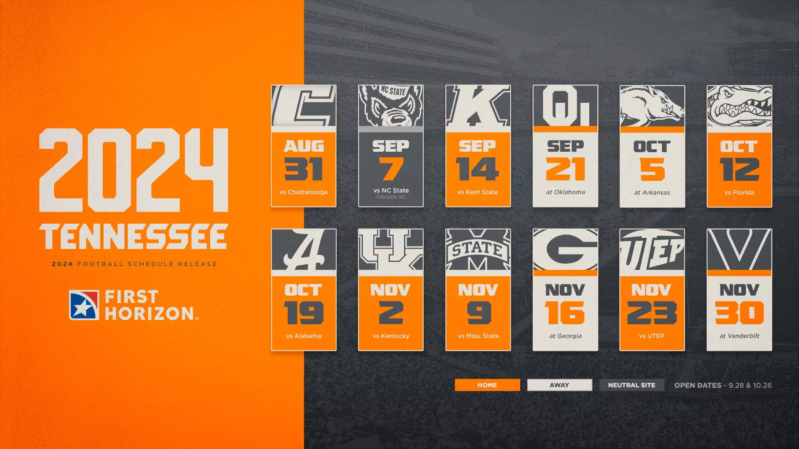
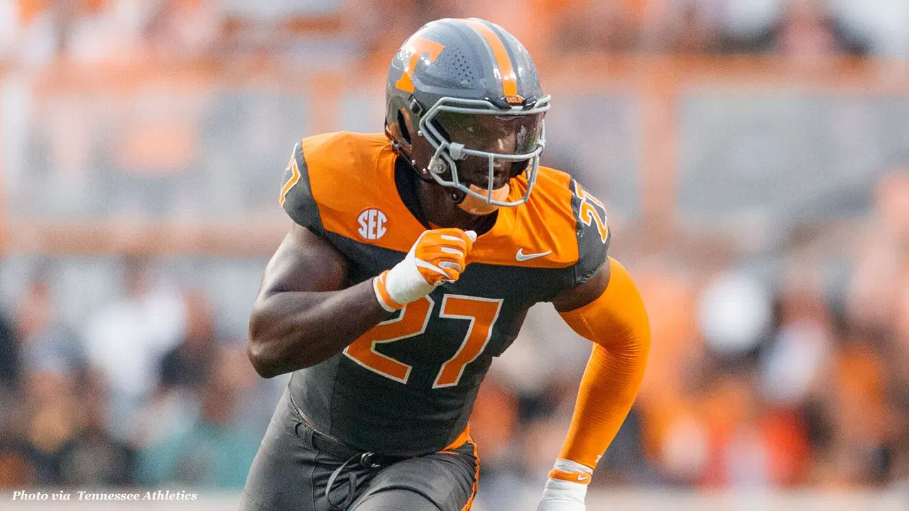

2024 Schedule
GET YOUR TICKETS NOW

Tennessee football unveils Smokey Grey uniform for 2024
Tennessee's 2024 Smokey Grey football uniforms are inspired by the Tri-Star emblem on the state flag.

Highest rated edge rusher in College Football
EA Sports College Football 25 gives James Pearce 95 overall player rating
Latest News
- Tennessee Football’s Most Important Players for 2024: No. 12
- Tennessee football unveils Smokey Grey uniform for 2024
- Vols Freshman Running Back Tagged As Potential Sleeper Pick For Tennessee Football